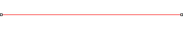
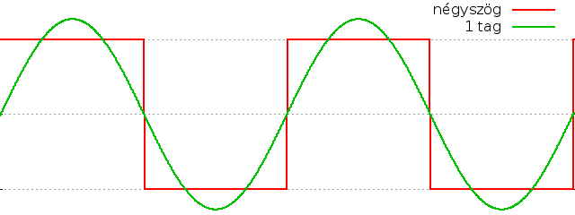
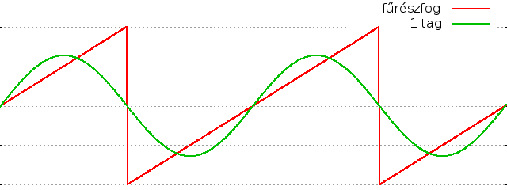
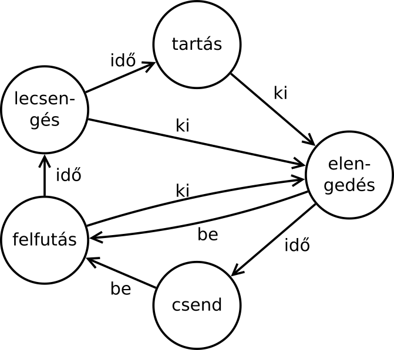
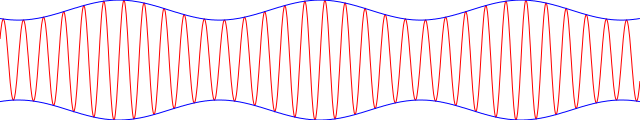
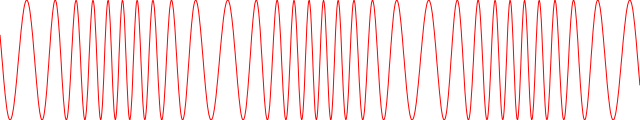

Adventi naptár
Czirkos Zoltán · 2019.02.27.
InfoC szintetizátor
A tegnapi adventi naptár bejegyzésben egy hangot szintetizáló program szerepelt: ez a szinusz függvényt használva különböző magasságú hangokat keltett. Röviden megnéztük, hogyan viszonyulnak egymáshoz a zenei hangok, hogy mik azok a hangközök, és hogy hogyan tudjuk elküldeni a generált hangot a hangkártyának az SDL segítségével.
A Boci, boci tarkát ezzel a programmal el lehetett játszani (q, e, q, e, t, t), meg néhány akkordot is lehetett kelteni (pl. q, e, t egyszerre), azonban a programnak a hangja inkább egy hallásvizsgálatra hasonlított, mintsem zenei volt:
Akik megnézték a program forráskódját is (és remélem, ezt sokan megtették, különben semmi értelme a naptárnak ☺), megtalálták azokat a részeket, amelyekkel a szinusz függvény helyett más függvényeket lehetett használni: a fűrészfog alakú jel egy elég szúrós hangot hoz létre, a négyszögjel pedig leginkább a '80-as évek videójátékaira emlékeztet. (Ez nem véletlen, hiszen ezt a legegyszerűbb előállítani elektronikusan: digitális áramkörrel, amelyből csak 0 és 1 jön ki! Ha ezt rákötjük egy hangszóróra, épp ilyet hallunk.)
fűrészfog
négyszög
A kérdés tehát ez: mitől más a hangszerek hangja? Miben más egy zongora A=440 Hz-es hangja és egy gitár A=440 Hz-es hangja?
Fogjunk egy húrt, mondjuk egy gitárnak a húrját. Rögzítsük ezt két végén (mint mondjuk egy gitár húrját), és pengessük meg (mint mondjuk egy gitár húrját). A húr elkezd rezegni. A rezgés frekvenciája a húr hosszától, vastagságától és a feszítő erőtől függ, ezek változhatnak. De egy biztos: a két vége, mivel azokat befogtuk, mozdulatlan marad. Ha megoldjuk a húr rezgését leíró egyenletet, olyan megoldást kell kapnunk, amelynél a húr két vége teljesen mozdulatlan, a kitérésük minden pillanatban nulla. Ilyet: 
Biztos, hogy így rezeg? Korántsem. Másféle rezgések is kialakulhatnak. Ha a
fenti rajzon a húr egyes pontjai kitérésének mértékét a sin(x)
függvény írja le, akkor lent, a bal oldali sin(2x) kell legyen. Ennél
a megoldásnál is mozdulatlan a két végpont. Kiderül, hogy a rezgést leíró
egyenletnek nem egy, hanem végtelen sok megoldása van.
Megoldás az alapfrekvencia összes egész számú többszöröse, pl. a
sin(3x) is, amely a jobb oldalt látható:
Sőt az így kapott rezgések összege
is megoldás: ha sin(x) a húr két végén fixen nulla, és sin(2x) is, akkor a sin(x)+sin(2x)
által megadott rezgésnél sem lesz ez másképp. És a sin(x)+sin(3x)+sin(10x)
sem, amely így néz ki:
Ezek a magasabb frekvenciájú rezgések a felharmonikusok. Ha megpengetünk egy húrt, akkor az nem egy, hanem sokféle felharmonikus frekvenciával egyszerre jön rezgésbe, amelyek az alap frekvenciának (f) egész számú többszörösei:
rezgés = ∑ An × sin(n2πf × t)
Ezeket a rezgéseket, bár eltérő frekvenciájúak, nem halljuk külön hangnak. Az összegüket a fülünk egyetlen hangnak érzékeli – a frekvenciák aránya pedig az érzékelt hang hangszínét határozza meg. Ez az egyik dolog, ami megkülönbözteti a hangszereket: a keltett hang spektruma, azaz a felharmonikusok aránya. Minél több felharmonikus van egy hangban, annál teltebb, gazdagabb a hangzása.
Az Analízis és a Jelek tárgyból sokat fog szerepelni Joseph Fourier neve, aki rezgések matematikai
leírásával is foglalkozott. Tudjuk azt, hogy minden periodikus függvény leírható megfelelően megválasztott
amplitúdójú és fázisú szinusz függvények összegeként. Egy ilyen összegben az egyes összegzett szinuszos
tagok összegei éppen a rezgés alapperiódusának egész számú többszörösei. Például egy négyszögjelet
a sin(nx)/n tagok összegével közelíthetünk, ahol n a páratlan értékeket veszi
fel. Minél több tagot használunk, annál pontosabb
lesz a közelítés:

Egy fűrészfog alakú jel pedig a (-1)n-1sin(nx)/n tagok összegzésével, az összes
pozitív egész n számra (párosakra is):

Fourier arra jött rá, hogyan kell ezeket az arányokat, azaz a szorzókat meghatározni egy ismert függvény esetén. Mi a programban visszafelé csináljuk majd: be lehet majd állítani az egyes szorzókat, aztán meglátjuk, milyen hangja van. Valahogy így:
typedef struct Harmonikus {
char *nev; /* a neve */
double frekszorzo; /* hanyszoros frekvencia az alaphanghoz kepest */
double arany; /* mekkora hangerovel: amplitudo */
} Harmonikus;
typedef struct HangSzin {
Harmonikus felharm[10]; /* felharmonikusok. 0-dik nem hasznalt, 1-es az alap. */
}
/* felharmonikusok osszegzese: itt hsz egy HangSzin-re mutat */
s_ez = 0;
for (felh = 0; hsz->felharm[felh].frekszorzo != 0; ++felh)
if (hsz->felharm[felh].arany != 0)
s_ez += hsz->felharm[felh].arany
* sin(hsz->felharm[felh].frekszorzo * h->frek * 2 * PI * t);A harmonikus neve azért kell, mert a program olyan néven fog rájuk hivatkozni, ahogyan a Hammond orgonára is voltak írva.
A hangok nem csak egyszerűen periodikus jelek: időben is változnak. Egy orgona képes tetszőlegesen hosszan ugyanazt a hangot kiadni, míg egy zongora billentyűjének megnyomása után szép lassan el fog halkulni a hang. Fontos tehát a hangerő időbeli változása. Ennek az időbeli változásnak a jelleggörbéje is nagyon jellemző az egyes hangszerekre. A zongoránál egy húr megszólaltatásakor a hang nagyon hirtelen felerősödik, utána pedig szép lassan halkul el. Az orgonánál ez a kiugró hangerő a megszólaltatáskor nem feltétlenül jellemző.
Az első generációs szintetizátorok ezt a két dolgot próbálták meg leutánozni. Az előállított periodikus rezgést egy ún. ADSR görbével modulálták. Ezt a görbét burkológörbének nevezik (envelope), mivel a hang tényleges értéke mindig ezen belül van. Az egyes szakaszok jelentése a következő:
- Attack
- Felfutás. A hang megszólalásakor hirtelen erősödik a maximális ideig. A hangkeltés innen indul a hang megszólaltatásakor.
- Decay
- Lecsengés. A maximális hangerő elérése után a hang gyorsan halkul.
- Sustain level
- Tartás. A lecsengés után, a tartási szakaszban a hang gyengébb, mint a maximális hangerő. Ez egészen addig tart, amíg a hang „kikapcsolását” el nem indítjuk.
- Release
- Elengedés. Végül a hang teljesen elhalkul.
A felfutás, lecsengés és elengedés az ADSR görbénél fix ideig tart; a tartást pedig a zenész határozza meg. Az orgonánál például egészen addig tartás szakaszban van a hang, amíg az orgonista az adott billentyűt nyomva tartja, utána pedig viszonylag gyorsan megszűnik. (A fenti rajznak van egy kis szépséghibája. Az emberi fül érzékenysége a hangok intenzitására nézve is logaritmikus. Ezért egy lineárisan erősödő hangnyomás nem lineárisan erősődő hang érzetét kelti. Ezt is kicsit érezni a program által keltett hangokon is.) 
Mindezt egy egyszerű szorzással lehet megvalósítani a programban, az előállított hullámformát szorozva a hangerővel. Persze kell egy állapotgép is. Az állapotátmeneti gráf a jobb oldalon látható. Csend állapotban a hang nem szól. „Bekapcsolásakor” a felfutás állapotba megy át, ahonnan szép lassan, az idő hatására (amikor elérte a felfutás során a maximum hangerőt, a lecsengés során a tartás hangerejét) a tartás állapotba jut. A kikapcsoláskor pedig elengedés fázisba kerül, ahonnan előbb-utóbb újra csend fázisba jut. Az aktuális állapot határozza meg azt, hogy a hangerőt épp növelni vagy csökkenteni kell, és hogy melyik időállandó szerint.
Az állapotgép lényeges részei:
typedef enum HangAllapot {
csend, felfutas, lecsenges, tartas, elengedes
} HangAllapot;
typedef struct Hang {
SDL_Keycode sym; /* billentyuje - a tegnapi programbol orokolt */
double frek; /* a frekvenciaja */
double hangero; /* a hangero, 0->1 és 1->0 valtoztatva, hogy ne pattogjon */
bool szol; /* billentyu lenyomva? - tegnapi programbol */
HangAllapot all; /* aktualis allapot a burkologorbehez */
} Hang;
/* itt is h a Hang-ra, hsz pedig a HangSzin-re mutatnak. egy kulso
* programresz a h->szolt igazra allitja a gomb megnyomasakor, 0-ba az
* elengedesekor; az allapotgep ennek megfeleloen valt allapotot. */
switch (h->all) {
case csend:
if (h->szol)
h->all = felfutas;
break;
case felfutas:
h->hangero += 1.0 / hsz->felfutas_ido * dt;
if (h->hangero > 1)
h->all = lecsenges;
if (!h->szol)
h->all = elengedes;
break;
case lecsenges:
h->hangero -= 1.0 / hsz->lecsenges_ido * dt;
if (h->hangero < hsz->tartas_hangero)
h->all = tartas;
if (!h->szol)
h->all = elengedes;
break;
...Ez a programrész az adott hang, h hangerejét változtatja az adott állapot
szerint. A változás sebessége például a felfutásnál 1.0/felfutas_ido, mivel a megadott idő
alatt kell a 0, minimális hangerőtől eljutni az 1-ig, a maximális hangerőig. A lecsengés és az
elengedés fázisban elvileg ennél kisebb változásnak kellene történnie az adott idő alatt, mert
nem 1-től 0-ig változik a hangerő ilyenkor, hanem csak 1-től a tartás hangerejéig, és utána onnantól
nulláig. Itt mindegyiknél 1.0/idő szerepel az egzakt képletek helyett – így egy kicsit intuitívabb
a program a felhasználó számára, hogy mindhárom beállítás egyformán viselkedik. Nem a hangerőváltozás
idejét, hanem annak sebességét lehet majd egyformán vezérelni.
Az így keltett hangok még mindig nagyon statikusak, gépiesek lennének. Ha a hang erejét periodikusan változtatjuk, akkor egy tremolószerű hangot kapunk. Ehhez nem kell mást tenni, mint az előállított hangot megszorozni egy újabb szinusszal, ami 1 körül lengedezik:
h'(t) = h(t) × (1 + Aam × sin(2πfam×t))
Ezt amplitúdómodulációnak is nevezik. A programban szabályozható ennek a modulációnak az erőssége (Aam, a fenti ábrán ez az érték 0,2), és a frekvenciája (fam) is.
A hang frekvenciája az amplitúdó változtatásától kicsit eltolódik. Ez elsőre furcsának hangzik, de annyira nem nehéz elképzelni. A szemléletes magyarázat a következő. Ha egy szinusz függvényt, amely egy adott időpillanatban valamilyen tempóval épp csökken (pl. a nulla felé tart), megszorzunk egy másik függvénnyel, ami szintén épp csökken, akkor az így kapott függvény gyorsabban, azaz meredekebben fog csökkenni. Meredekebb változáshoz pedig nagyobb frekvencia kell. Ha a két változás egy másik pillanatban egymás ellen dolgozik (egyik függvény csökken, másik nő), akkor pedig lankásabb az eredő függvény: kisebb a frekvencia. De ez a változás minimális, füllel nem lesz érzékelhető. Inkább a hangerő vibrálását halljuk:
eredeti
amplitúdómodulált
A frekvenciák eltolódását a képletből is le tudjuk vezetni. Ehhez elég felírni a két szinusz (az eredeti hang és a moduláció) szorzatát:
cos x+y cos x-y
sin x * sin y = - ------- + -------
2 2
(A negatív előjel és a szinusz helyett koszinusz függvény itt nem lényeges különbségek. Azok csak a fázist
módosítják: sin x = cos (x-90°) – arra pedig az emberi fül érzéketlen.)
Hogy ahhoz hasonló remegő hangot kapjunk, mint amilyet egy forgó hangszóró kiad, nem csak az amplitúdót kell modulálni, hanem a frekvenciát is. A frekvencia változása a forgó hangszóróknál a Doppler-hatás miatt keletkezik: ugyanamiatt, amiért magasabbnak halljuk a mentőautó szirénáját, amikor közeledik, és alacsonyabbnak, amikor távolodik. Ha épp felénk tart a hangszóró, akkor sűrűbbek lesznek az általa a levegőben keltett hullámok (mert a hanggal együtt mozog felénk). Ha távolodik, a hangja akkor is felénk tart, és emiatt pedig ritkábbak lesznek a hullámok:
A szinusz hullámok keltésénél ehhez a fázist kell módosítani periodikusan:
h(t) = sin(2πf×t + Afm×sin(2πffm×t))
Ahogy a hozzáadott tag, a belső szinusz időben nő, úgy kezd el a külső szinusz kicsit sietni tehát nagyobb frekvenciájú lesz. A belső szinusz csökkenésekor pedig a külső elkezd késni, tehát kisebb frekvenciájú a kimenet. Ennek mértékével is csínján kell bánni, mert ha túlzásba visszük, inkább egy ufós filmbe való hangot kapunk. A fenti képen szándékosan erős a moduláció, hogy jól látszódjon – egy teljes oktávnyi. Ez a fülünknek szörnyűséges hang.
fázismodulált
durván fázismodulált (ufó)
A program most a szokásosnál egy nagyobb darab, kb. 600 soros. De nem kell megijedni, az újdonság nem annyira sok benne: bele van építve az a függvénykönyvtár is, amely egy régebbi adventi bejegyzésben szerepelt, és amellyel felhasználói felületeket lehet létrehozni.
Három modulból áll – a három modul egymástól annyira eltérő feladatot lát el, hogy merénylet lett volna a Prog1 tárgy ellen, nem szedni modulokra. Az egyes modulok feladatai a következők:
widget.c– ez adja a felhasználói felületet. Szinte változtatás nélkül a múltkori változat: lehet benne gombokat és csúszkákat definiálni, és egy eseményvezérelt ciklusban kezeli az egérműveleteket.synth.c– a szintetizátor. Ez generálja a hangot, amihez adni kell neki egySzintitípusú struktúrát. Ahogy az abban lévő adatokat változtatjuk, úgy fog automatikusan változni a hang.main.c– a főprogram, amely létrehozza aSzintistruktúrát, megépíti a felhasználói felületet, és utána rábízza a működést az eseményvezérelt ciklusra.
A widget.c-n történt változtatások tényleg nem nagyok. (A működésével
kapcsolatban lásd a régebbi írást!) Egy nagy elvi változtatás van, hogy a
billentyuzet_cb_megad() nevű függvény meghívásával meg lehet neki adni egy függvényt,
amelyet billentyű lenyomása és elengedése esetén meghív. Erre azért volt szükség, hogy a
hangokhoz tartozó gombokat a főprogram tudja kezelni. A mechanizmus teljesen azonos azzal,
ahogyan az egérkattintásokat is kezelni kell: egy callback függvényt kap ez, amit majd visszahív
szükség esetén.
A main.c létrehoz magának egy speciális csúszkát (uj_double_csuszka()), amely
a simától abban különbözik, hogy ennek van egy felhasználói callback függvénye is. Amikor változik az
értéke, akkor az új értékét egyből beírja egy megadott double típusú változóba. Ehhez
nagyon jól használható az, hogy a generikus callback függvénynek lehet egy paramétere, mert az a
void* mutató az írandó double változóra mutathat. Valahogy így:
static void set_double(Widget *widget, int x, int y, void *param) {
double *cel = (double *) param;
*cel = widget->adat.csuszka.jelenlegi;
}
static Widget *uj_double_csuszka(int x, int y, int szel, int mag, double *pd) {
Widget *w = uj_csuszka(x, y, szel, mag, *pd);
w->felhasznaloi_cb = set_double;
w->felhasznaloi_cb_param = (void *) pd;
return w;
}A zongorához lett egy általános típusú widget, aminek a főprogram a rajzoló függvényét
lecseréli a zongorát rajzoló zongorat_rajzol() függvényre.
A synth.c forrásfájl matekja a fentiek alapján adja magát. Programozási szempontból
annyiban különbözik a tegnapitól, hogy az SDL által meghívott, hangot generáló callback függvény
itt egy paramétert is kap. Azt a pointert kapja meg, amely a main() függvényben definiált
szintetizátor struktúrára mutat, így aztán látja az összes szükséges adatot, hogy miféle hangot
kell előállítania. A billentyűk megnyomásakor-elengedésekor a főprogram ebbe a struktúrába írja
bele azok állapotát, így arról is értesül.
Kicsit furcsa talán a program, hogy nem olyan lineáris a felépítése már, mint az eddig megszokottaknak: nincs meg az a megszokott fentről lefelé haladás a kódban, hanem ide-oda ugrál a végrehajtás az eseményvezérelt hurok, a callback függvények és a hanggeneráló között. Ezt szokni kell – ilyesmiről sok tárgyból lesz szó a későbbiekben.
A forráskód: advent22-infoc_szintetizator.zip.
Linuxosoknak van benne egy Makefile. Akik Code::Blocksolnak, be kell tenniük egy SDL projectbe
(Project / Add files). Az alap SDL project main.c-jét pedig ki kell venni. Ha akadozna a hang, akkor
a hang_init() függvényben 48000-ra kell állítani a frekvenciát – nem mindegyik hangkártya
szereti manapság a 44100 Hz-et.